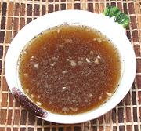

|
Vinegar Garlic DipPhilippine | ||||
| Makes: Effort: Sched: DoAhead: |
1/2 cup * 7 min Yes |
A popular multi-use dip / dressing for fried fish, spinach salads and the like. This one has no chili heat, but if you want that, see our recipe for Vinegar Garlic Dip with Chili. | |||
|
|
1/2 3 1/2 1 |
c cl t t |
Vinegar (1) Garlic Salt Pepper, black |
Make - (7 min)
|